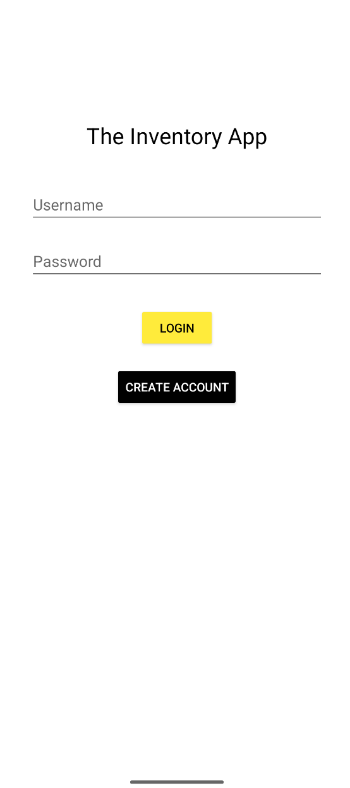
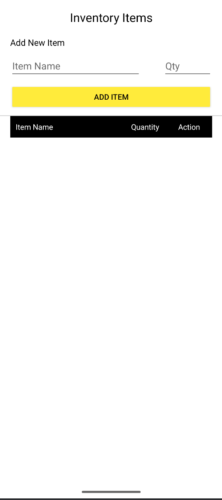
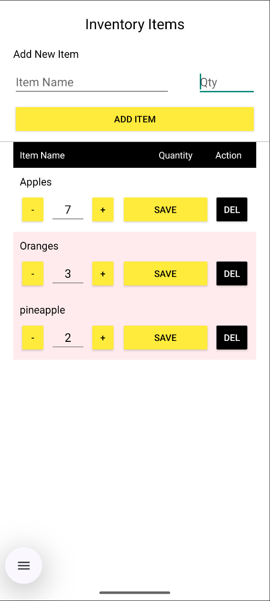
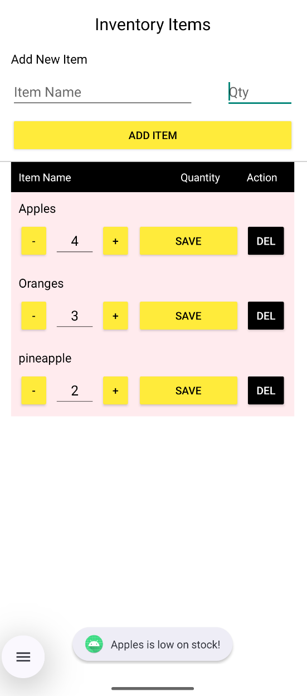
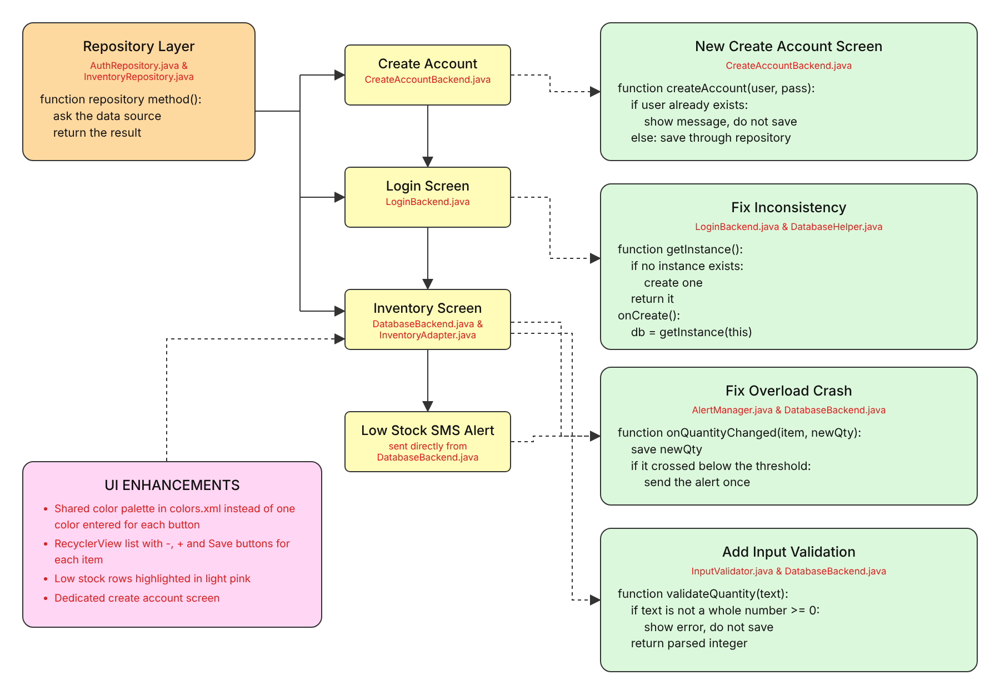
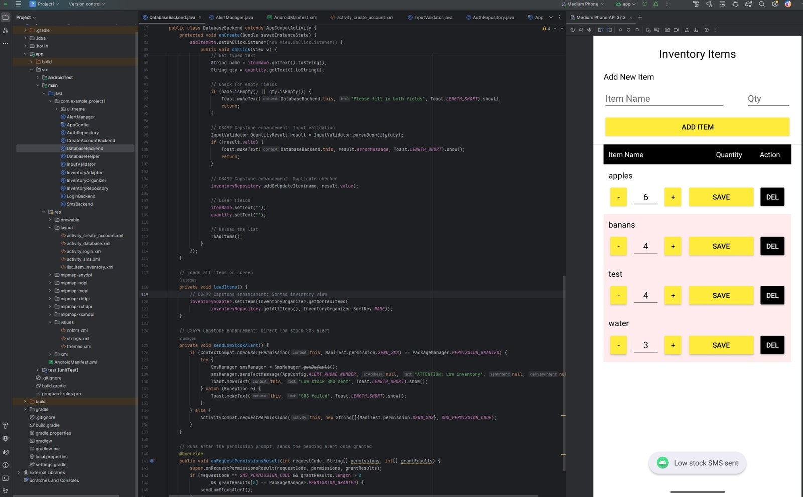
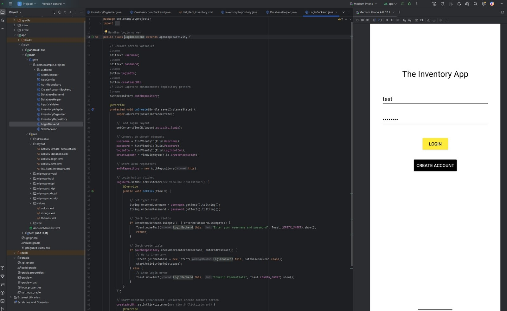
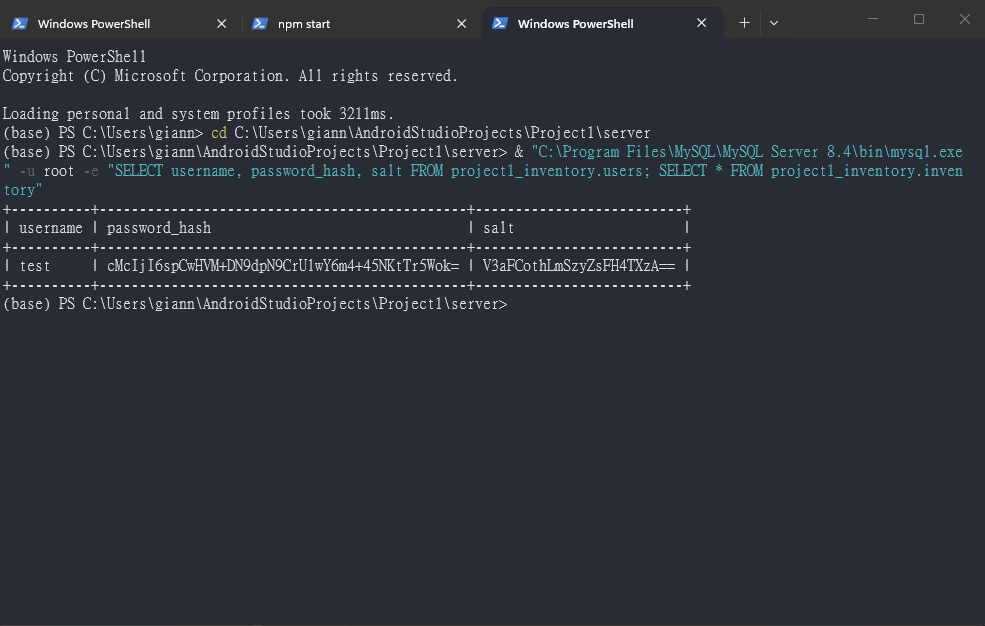

Gianna Screen ePortfolio
B.S. Computer Science · Southern New Hampshire University· CS-499 Capstone Final
Professional Self-Assessment
Introduction
I have been enrolled in SNHU’s Computer Science program since 2025. Before that, I attended SNHU from 2021 to 2023 and earned my associate degree in cybersecurity, bringing my total time as an SNHU student to about five years. Over the past two years, three of the most important skills I have developed are problem-solving and debugging, understanding how different components of a system work together, and maintaining a strong understanding of core concepts and principles.
As I work toward a career in embedded engineering, these skills have taught me how to approach complex problems, identify areas for improvement, and develop effective solutions. I have also learned to work through imposter syndrome and recognize that there is always room to grow. The feedback I received throughout this capstone project helped me better understand my strengths and identify areas where I can continue improving, allowing me to move forward with greater confidence in my abilities.
I currently work as an HR compliance associate, and one of my goals is to transition into a more technical role. To do that, I need to be able to recognize opportunities to improve existing systems and implement changes that make processes more efficient. That is exactly what I practiced through this capstone project. I took an application that was prone to crashing and had inconsistent logic, identified weaknesses in its structure, logic, and data handling, and made improvements in each area. Working through these issues helped me develop a more systematic approach to evaluating and improving software. I can now apply that same approach in my current role by identifying inefficiencies in our existing systems and finding practical ways to address them.
Selected Artifact
My ePortfolio is built around one project, the CS-360 Inventory Android Application. I finalized it in February of 2026 in an incomplete state: it continuously crashed and had inconsistent logic throughout. I made significant enhancements for each of the three categories, so the same app shows my growth in each category.




Upon reviewing the artifact in its original state, the plan was to demonstrate the knowledge and skills I developed throughout my time at SNHU by applying what I learned to improve this project. Rather than making changes just for the sake of adding features, I wanted each enhancement to reflect my understanding of how different areas of computer science work together. The repository layer would demonstrate what I learned about software design by separating data access from the user interface, making it easier to change how the application retrieves information without having to rewrite the screens. I also planned to apply my knowledge of data structures and algorithms by implementing a HashMap-based duplicate checker, supported by a unique index in MySQL to prevent duplicate records at the database level. For the databases category, I planned to hash passwords with a unique salt for each user and move the data into a central MySQL database, which would show what I learned about database architecture and security. Through these changes, my goal is to show how I could take these core concepts I have learned throughout my degree and apply them in a meaningful way.
Original code base Enhanced code base
Collaboration in a Team Environment & Communicating with Stakeholders
While developing the enhancements, I revised most of the code to make it easier for another developer to understand and maintain. This included using standard Java naming conventions for classes, adding comments to explain the purpose and functionality of enhancements, and using repository classes to separate data access from the screens. These changes make the code easier to navigate and allow developers to work on individual components without needing to understand the entire application.
Working on various projects throughout my time at SNHU has taught me to recognize and build on people's individual strengths. I have learned that effective teamwork is not about everyone trying to do everything, but about understanding where each person can contribute the most. By developing my own areas of expertise while allowing others to apply theirs, a team can work more efficiently and produce a stronger final product.
The journal entry assignments also helped me improve how I communicate project progress and potential product limitations to stakeholders. Through feedback on my written explanations, I learned to present technical information in a way that is clear and accessible to readers without a technical background. For example, I included test results and explained why I chose a HashMap, helping readers understand both the decisions I made and the reasoning behind them without requiring extensive technical knowledge.
Data Structures and Algorithms
The algorithms catgory/work taught me to how to choose the right tool for the specific task and to understand the why behind it. For the enhancements in this category, I picked each algorithmic approach by comparing time and efficiency trade-offs.
Because I took a year off from school, I had to relearn how much this area matters and how to apply it. Algorithmic structures was not something I could rely on remembering, so I had to go back through my initial learnings and open my mind to new and alternative choices. Approaching the task of relearning shows my effort and the strengths of reliability when something has changed or evolved.
Software Engineering and Databases
Software engineering and databases taught me that how a project is organized matters just as much as whether it works. The original app worked, but everything was tangled together, which made every bug hard to track down. Working through this enhancement showed me the value of keeping things separate and simple, and that changing too much at once only makes it harder to find what went wrong. The database side taught me patience. Getting MySQL running took much longer than I expected, and I learned to take it one step at a time instead of trying to fix everything at once.
Security
Security taught me to look at an app through every perspective possible. The biggest problem in my original artifact was that passwords were stored as plain text. Fixing that, and finding other ways to prioritize protecting the data showed me that security works best when it is built into every aspect of a project instead of one singular component.
Navigate the ePortfolio
Code Review Software Design Algorithms & Data Structures Databases
Code Review
Recorded Walkthrough of Artifact & Planned Enhancements
This video walks through the original CS-360 Inventory Android Application before I made any enhancements. It covers how the existing code works and the enhancements I planned for the three major categories: software design and engineering, algorithms and data structures, and databases.
Software Design and Engineering
For this category, while each component of the application worked, the login screen and create account screen paired with the database to allow users to log in, and the inventory was successfully updated through user input, the app continuously crashed, did not start on the login screen, and had inconsistent logic throughout the entirety of the structure. I selected this artifact for this category because the app's structure was inconsistent and gave me clear room to show what I learned about software design and engineering.
For this enhancement, I was successfully able to meet the majority of the enhancements that I had initially planned. I replaced all snake_case classes with PascalCase per standard Java convention, set up a RecyclerView adapter for the item list, added a repository layer sitting between the screens and the database, created an entirely new screen for creating an account, and added enhancements to the overall user interface.
The repository layer made the biggest difference in how the code is organized. In the original app, the inventory screen built every row by hand from a raw database cursor and called Integer.parseInt directly on whatever the user typed, so one class was handling the screen, the database, and the input checking all at once. Now the screens only call methods like getAllItems and updateItemQuantity from the repository and never touch SQL or a cursor, which means the way the data is stored can change without rewriting the screens. It is also easier to maintain because each problem has one place to look. A bug with the data goes to the repository, and a bug with how something looks goes to the screen. I saw this firsthand in the databases enhancement, when I replaced the local SQLite file with a REST API and the screens only needed small changes.
To test and ensure that these enhancements work, I compared how the app behaved before and after. The input validation tests check that whole numbers and zero are accepted, and that text, decimals, negative numbers, empty input, and numbers that are too large are rejected. The alert tests check that the low stock alert only fires when an item first drops below the threshold of 5 and does not fire again while it stays low.
The biggest challenge for this enhancement was debugging the repository layer, since it kept causing the build to fail. I ran into a "DatabaseHelper() has private access" error over and over until I found documentation on Stack Overflow that helped me understand the singleton pattern I was trying to implement. This taught me how important simplification is when making modifications, since trying to change too much of the data layer at once made it much harder to find the actual problem.
Design Flow

Algorithms and Data Structures
For this category, the original version had almost no algorithms or data structures. Items could be added with no check for duplicates, so entering the same item name twice created two separate rows instead of updating the existing quantity. The inventory list also had no sorting, so items displayed in whatever order they happened to be added, and there was no way to filter the list down to just the items that were low in stock. I selected this artifact for my ePortfolio because it needed exactly the kind of logic this category is meant to showcase.
For this enhancement, I was successfully able to meet the enhancements that I planned to use for algorithms and data structures. I added a duplicate item checker that uses a HashMap to look up an item by name, so adding an item that already exists updates its quantity instead of creating a duplicate row. I also added sorting so the inventory list displays alphabetically, and a filtering function that pulls out only the low stock items so they can be shown separately from the full inventory list.
I chose a HashMap for the duplicate checker because the alternative was looping through the whole inventory list every time an item was added to see if the name already existed. That means the app could have to check every single item, and it gets slower as the inventory grows. A HashMap stores the items by name, so the app can go straight to the one it needs instead of checking each item, and that stays fast no matter how big the inventory gets. The app still has to load the list and build the map first, so the real gain is in the lookup itself, and the unique index in the MySQL database backs it up from the other side. For the sorting, I used Collections.sort instead of writing my own because the built-in version is faster than a basic sort I could have written by hand, like an insertion sort, which gets slow as the list grows. The low stock filter only loops through the list one time, so it stays simple and quick.
I tested all three of these enhancements, starting with the duplicate checker to show that adding an item that already exists updates the existing quantity (for example, 6 apples plus 4 more becomes 10) instead of adding a new row, and that a new item or an empty inventory adds a new row. The sorting tests show that the list sorts alphabetically without caring about capital letters, sorts by quantity from lowest to highest, and does not change the original list. The low stock tests show that only items below 5 are returned, that an item sitting at exactly 5 is not included, and that the result is empty when nothing is low.
The biggest challenge for this enhancement was getting the SMS function to link correctly with the database. Every time an item dropped into low stock, it would turn the SMS function off instead of sending the alert, which meant the user had to manually turn it back on, and then it would turn off again for the next low stock item. This forced me to go back through how the low stock check was connected to the SMS screen and rework it so the alert sends directly instead of relying on a separate screen the user had to keep re-enabling.


Databases
For this category, the original implementation contained several areas that required improvement. For example, every password was stored as plain text exactly as the user entered it, which meant anyone with access to the database file could read all credentials. Additionally, all data existed solely within a local SQLite file on a single device, so installing the application on a second device or re-installing elsewhere resulted in an empty system with no user accounts and no inventory records. I selected this artifact for the databases category because these gaps provided a clear opportunity to demonstrate my abilities in database architecture by implementing the necessary improvements.
I was able to complete both of the database enhancements I outlined previously. Passwords are now hashed using PBKDF2 with a unique random salt for each user, which ensures that the database stores only a scrambled key and never reveals the actual password. I verified the functionality using the username “test” and the password “password,” and the database behaved exactly as intended.
I also migrated both the user accounts and the inventory records into a centralized MySQL database that the application accesses through a REST API. This change allows users to log in from any device and view the same inventory without relying on a single local file. Additionally, I added a unique index on the item name so the database itself prevents duplicate entries rather than relying solely on the checker I implemented.
I also wrote individual tests for the hashing class. They check that the same password and salt always give the same key, that different passwords or different salts give different keys, that a salt is never reused, and that the stored key is not the plain password.
Getting the app connected to MySQL was the hardest part. My terminal first printed that the system did not recognize the mysql command, and it turned out MySQL was installed but in a different folder than I expected. Once I used the right folder, I ran into a new error saying it could not connect to the server. The cause was that a recent factory reset resulted in MySQL no longer actually being set up or started on my computer, so there was no database running to connect to. I had to create the database files and start the server manually before anything else could work.
